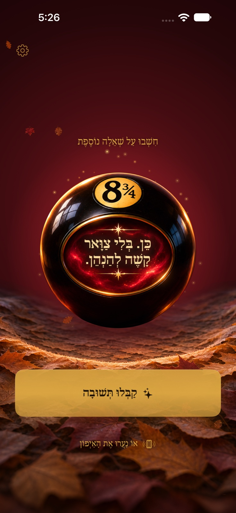
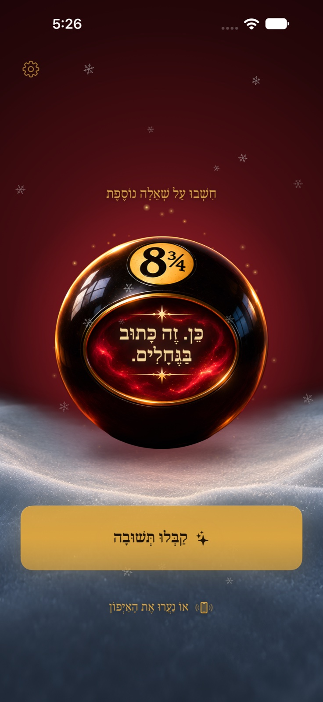
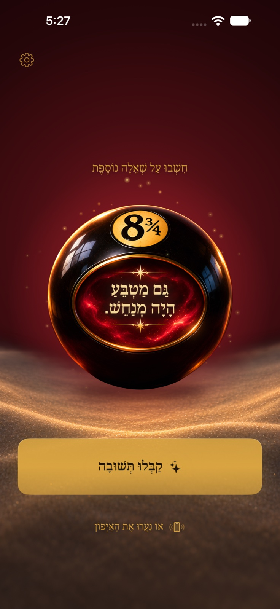

בחרו את הסגנון
הסט הקלאסי מגיע עם הומור יבש. הסט הקסום מדבר בסימנים, לחשים וקסם עתיק.
כדור תשובות לאייפון
יש שאלה בראש? הקישו או נערו את האייפון. תנו לעשן להתפזר וגלו מה יש לכדור לומר.
נוצר לאייפון · iOS 18 ומעלה

קצת מתח. ואז מגיעה תשובה.
הרבה מעבר לכן או לא
רגע של קסם, עולם שמתחלף וכדור שאפשר להפוך לשלכם.
הסט הקלאסי מגיע עם הומור יבש. הסט הקסום מדבר בסימנים, לחשים וקסם עתיק.
צרו רשימות תשובות ב״הכדור שלי״. בדיחות פרטיות, משפטים משפחתיים וכל מה שנשמע כמוכם.
עלי שלכת, שלג חורפי, פריחת אביב וחום קיצי. לכל עונה אווירה משלה.
כדור אחד. עולמות שונים.


השאלה נשארת אצלכם
בלי חשבון. בלי פרסומות. גם בלי אינטרנט. התשובות שלכם נשמרות באייפון שלכם.
קצת שעשוע, להנאה בלבד. ההחלטות הגדולות נשארות שלכם.